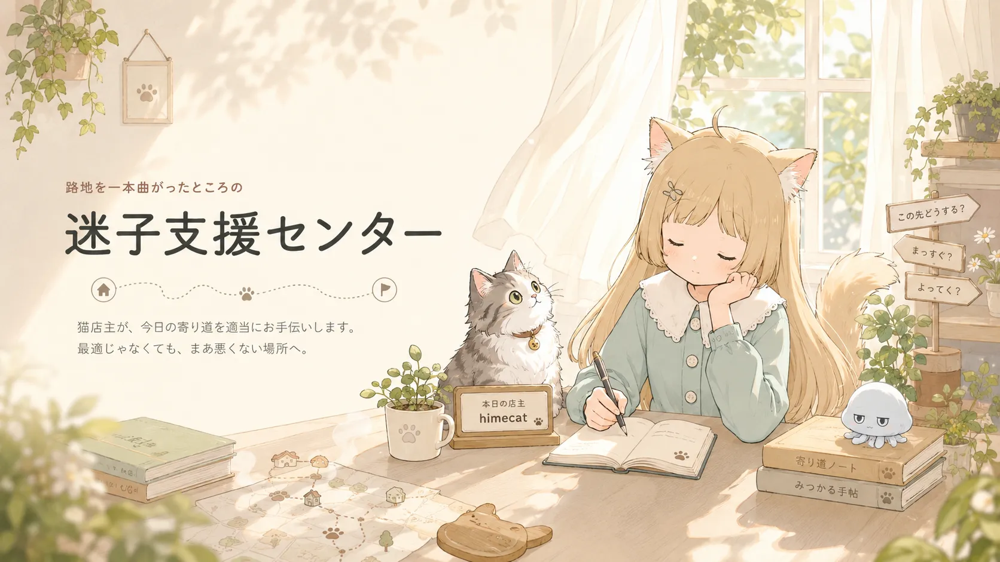

App
迷子支援センター
寄り道したい日の行き先を決めるアプリ
どこかへ出かけたいけれど行き先に迷うとき、思いがけない寄り道先との出会いを手伝います。

開発メモ
目的地を決めるのが苦手な日にも、外へ出る理由がひとつ見つかるようなアプリにしたいです。効率よりも、寄り道の偶然を楽しめることを重視しています。
アルゴリズムとかは出来るだけ省きました。そっちの方が自由で面白い！

App
寄り道したい日の行き先を決めるアプリ
どこかへ出かけたいけれど行き先に迷うとき、思いがけない寄り道先との出会いを手伝います。

目的地を決めるのが苦手な日にも、外へ出る理由がひとつ見つかるようなアプリにしたいです。効率よりも、寄り道の偶然を楽しめることを重視しています。
アルゴリズムとかは出来るだけ省きました。そっちの方が自由で面白い！